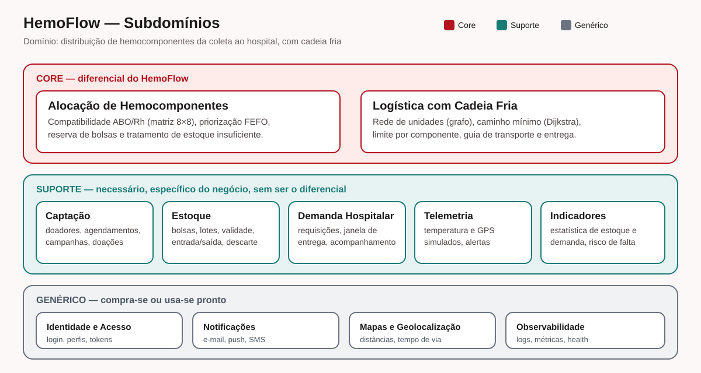
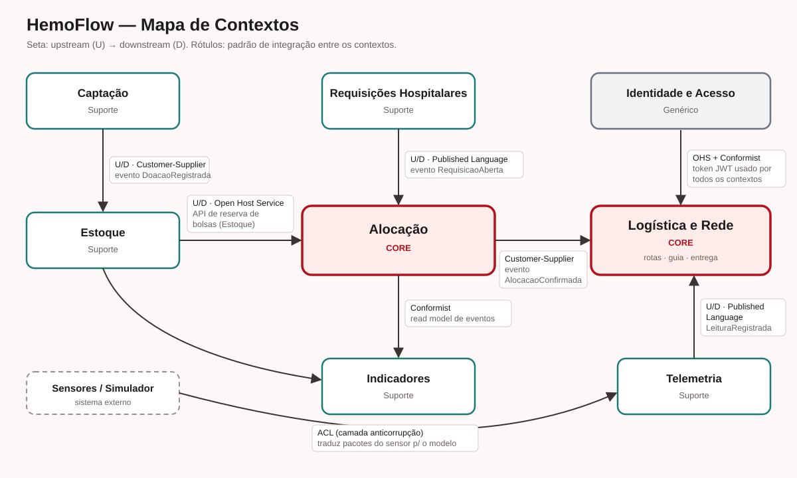
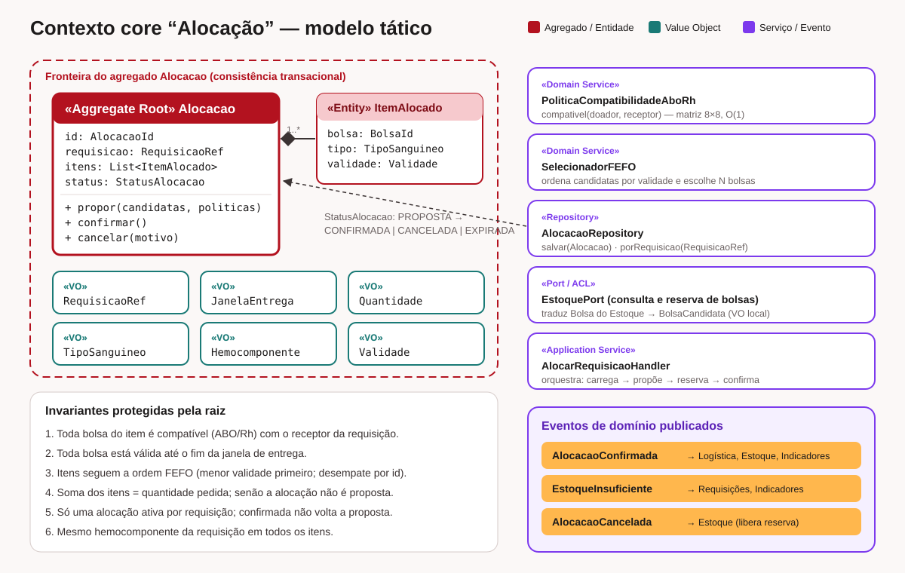
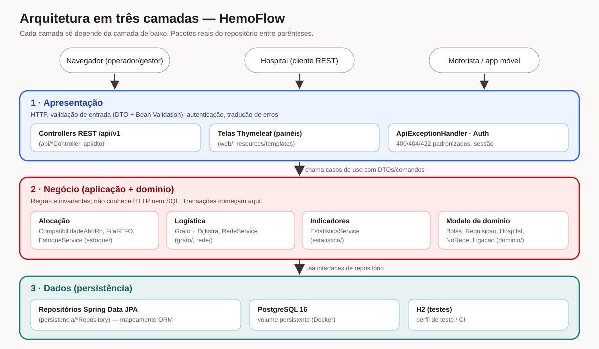

Projeção
Microsserviços por bounded context (+ serverless opcional)

10
DDD · modelo tático com Gherkin · três camadas · microsserviços · três cenários com orçamento
Hoje
/api/v1Problemas

| Contexto | Tipo | Responsabilidade |
|---|---|---|
| Alocação | Core | Escolher e reservar bolsas compatíveis (ABO/Rh) priorizando FEFO |
| Logística e Rede | Core | Rede, rota de menor tempo, limite de cadeia fria, guia e entrega |
| Captação | Suporte | Doadores, agendamentos, campanhas e doações |
| Estoque | Suporte | Inventário físico de bolsas, validade, reservas e descarte |
| Requisições Hospitalares | Suporte | Pedido do hospital e acompanhamento |
| Telemetria | Suporte | Leituras de temperatura/GPS e alertas |
| Indicadores | Suporte | Read model estatístico (CQRS) |
| Identidade e Acesso | Genérico | Login, perfis e tokens (Keycloak/Cognito) |
| Termo | Significado | Contexto |
|---|---|---|
| Alocação | Decisão de quais bolsas atendem a requisição; proposta → confirmada | Alocação |
| Reserva | Bloqueio temporário da bolsa no estoque; expira se não confirmada | Estoque |
| FEFO | First Expired, First Out: validade mais próxima sai primeiro | Alocação |
| Solicitante × Nó | O hospital que pede × o hospital como destino no grafo | Requisições × Logística |
| Limite de cadeia fria | Tempo máximo de transporte: 120 min hemácias, 90 min plaquetas | Logística |
| Guia de transporte | Bolsas em FEFO, rota, temperatura, checklist e assinaturas | Logística |
| Estoque insuficiente | Sem bolsas compatíveis e válidas suficientes → aguardando estoque | Alocação |
Glossário completo, com 22 termos, no documento (seção 2.3).


Contexto: hoje é "01/12/2030" e o estoque tem hemácias: | BOL-0007 | A+ | 20/12/2030 | | BOL-0101 | B+ | 03/12/2030 | | BOL-0042 | O- | 05/12/2030 | | BOL-0150 | A+ | 30/11/2030 | Cenário: Alocar bolsas compatíveis respeitando FEFO Dado que o Hospital da Restauração abriu a requisição "REQ-17" de 2 bolsas de hemácias para receptor A+, janela 01/12/2030 14:00 Quando o operador solicitar a alocação da requisição "REQ-17" Então a alocação é confirmada com as bolsas, nesta ordem: | 1 | BOL-0042 | O- | | 2 | BOL-0007 | A+ | E "BOL-0101" não é considerada (incompatível com A+) E "BOL-0150" não é considerada (vencida) E as bolsas alocadas ficam "RESERVADA" no estoque E o evento "AlocacaoConfirmada" é publicado para a Logística

Pacotes por contexto, três camadas, eventos internos + outbox, um schema por contexto, testes ArchUnit.
= Cenário A
Gateway na frente; svc-logistica (core) e svc-telemetria (volume) saem; broker gerenciado; funções serverless.
= Cenário B (alvo)
Demais contextos e infraestrutura como código, só se: mais de 50 hospitais, mais de 1 milhão de leituras/dia, SLA de 99,9% ou mais de 3 squads.
= Cenário C
A função da guia de transporte já roda como serverless (Cloudflare Workers): é o primeiro pedaço da fase 2 pronto.
Render Web + PostgreSQL + Workers Free
US$ 44,62/mês · 112 h
Monólito + logística + telemetria, RabbitMQ, Redis, Sentry
US$ 200,62/mês · 416 h
ECS Fargate, 6 RDS, ALB, SNS/SQS, NAT, CloudWatch
US$ 498,91/mês · 980 h
Custo total = infraestrutura em 12 meses + esforço de implantação. Câmbio de R$ 5,40/US$ e valor-hora de R$ 80, ambos editáveis na aba Premissas. Preços de lista estimados (nov/2026).
| ADR | Decisão |
|---|---|
| 001 | DDD: subdomínios + 8 bounded contexts |
| 002 | Três camadas em cada contexto |
| 003 | Monólito modular + Strangler Fig |
| 004 | Eventos de domínio (outbox, DLQ) |
| 005 | Banco por serviço |
| 006 | Serverless só para funções pontuais |
| 007 | Cenário B como alvo de 12 meses |
Fazer o A agora e chegar ao B em 12 meses. Ele isola o core logístico e a telemetria por ~42% do custo do C.
Próximos passos
Documento (PDF) e slides na entrega · diagramas, planilha e ADRs em docs/arquitetura/ no repositório